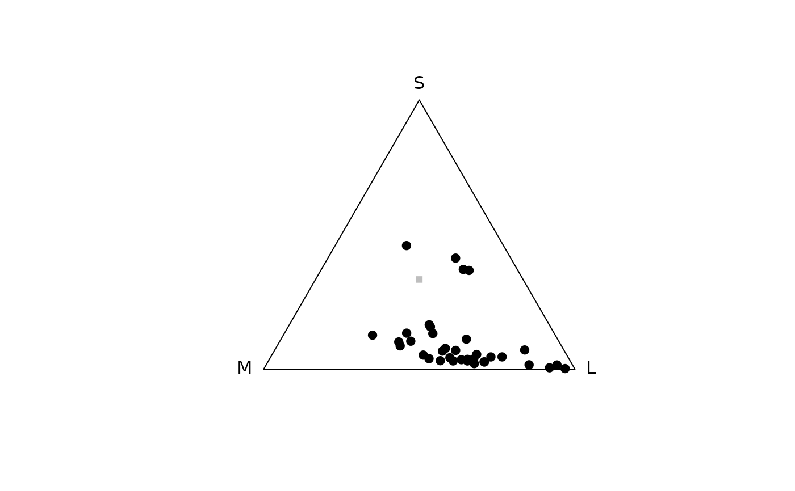

Models reflectance spectra in a colorspace. For information on plotting
arguments and graphical parameters, see plot.colspace().
Usage
colspace(
vismodeldata,
space = c("auto", "di", "tri", "tcs", "hexagon", "coc", "categorical", "ciexyz",
"cielab", "cielch", "segment"),
qcatch = NULL,
...
)Arguments
- vismodeldata
(required) quantum catch color data. Can be either the result from
vismodel()or independently calculated data (in the form of a data frame with columns representing quantum catches).- space
Which colorspace/model to use. Options are:
auto: if data is a result fromvismodel(), appliesdi,triortcsif input visual model had two, three or four cones, respectively.di: dichromatic colourspace. Seedispace()for details. (plotting arguments)tri: trichromatic colourspace (i.e. Maxwell triangle). Seetrispace()for details. (plotting arguments)tcs: tetrahedral colourspace. Seetcspace()for details. (plotting arguments)hexagon: the trichromatic colour-hexagon of Chittka (1992). Seehexagon()for details. (plotting arguments)coc: the trichromatic colour-opponent-coding model of Backhaus (1991). Seecoc()for details. (plotting arguments)categorical: the tetrachromatic categorical fly-model of Troje (1993). Seecategorical()for details. (plotting arguments)ciexyz: CIEXYZ space. Seecie()for details. (plotting arguments)cielab: CIELAB space. Seecie()for details. (plotting arguments)cielch: CIELCh space. Seecie()for details. (plotting arguments)segment: segment analysis of Endler (1990). Seesegspace()for details. (plotting arguments)
- qcatch
Which quantal catch metric is being inputted. Only used when input data is NOT an output from
vismodel(). Must beQi,fiorEi.- ...
additional arguments passed to
cie()for nonvismodel()data.
References
Smith T, Guild J. (1932) The CIE colorimetric standards and their use. Transactions of the Optical Society, 33(3), 73-134.
Westland S, Ripamonti C, Cheung V. (2012). Computational colour science using MATLAB. John Wiley & Sons.
Chittka L. (1992). The colour hexagon: a chromaticity diagram based on photoreceptor excitations as a generalized representation of colour opponency. Journal of Comparative Physiology A, 170(5), 533-543.
Chittka L, Shmida A, Troje N, Menzel R. (1994). Ultraviolet as a component of flower reflections, and the colour perception of Hymenoptera. Vision research, 34(11), 1489-1508.
Troje N. (1993). Spectral categories in the learning behaviour of blowflies. Zeitschrift fur Naturforschung C, 48, 96-96.
Stoddard, M. C., & Prum, R. O. (2008). Evolution of avian plumage color in a tetrahedral color space: A phylogenetic analysis of new world buntings. The American Naturalist, 171(6), 755-776.
Endler, J. A., & Mielke, P. (2005). Comparing entire colour patterns as birds see them. Biological Journal Of The Linnean Society, 86(4), 405-431.
Kelber A, Vorobyev M, Osorio D. (2003). Animal colour vision - behavioural tests and physiological concepts. Biological Reviews, 78, 81 - 118.
Backhaus W. (1991). Color opponent coding in the visual system of the honeybee. Vision Research, 31, 1381-1397.
Endler, J. A. (1990) On the measurement and classification of color in studies of animal color patterns. Biological Journal of the Linnean Society, 41, 315-352.
Examples
data(flowers)
# Model a dichromat viewer in a segment colourspace
vis.flowers <- vismodel(flowers, visual = "canis")
di.flowers <- colspace(vis.flowers, space = "di")
# Model a honeybee viewer in the colour hexagon
vis.flowers <- vismodel(flowers,
visual = "apis", qcatch = "Ei", relative = FALSE,
vonkries = TRUE, achromatic = "l", bkg = "green"
)
hex.flowers <- colspace(vis.flowers, space = "hexagon")
# Model a trichromat (the honeybee) in a Maxwell triangle
vis.flowers <- vismodel(flowers, visual = "apis")
tri.flowers <- colspace(vis.flowers, space = "tri")
plot(tri.flowers)

# Model a tetrachromat (the Blue Tit) in a tetrahedral colourspace
vis.flowers <- vismodel(flowers, visual = "bluetit")
tcs.flowers <- colspace(vis.flowers, space = "tcs")
# Model a housefly in the 'categorical' colourspace
vis.flowers <- vismodel(flowers, visual = "musca", achro = "md.r1")
cat.flowers <- colspace(vis.flowers, space = "categorical")